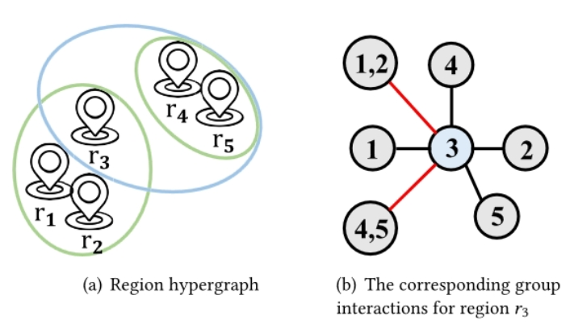
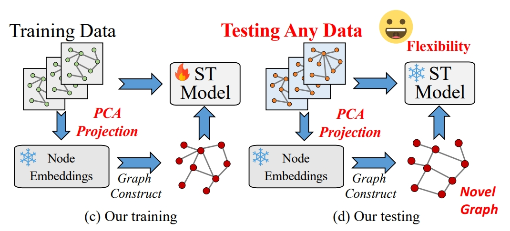
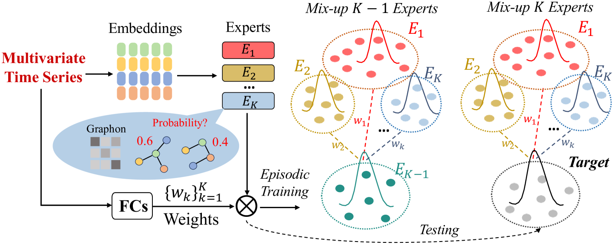
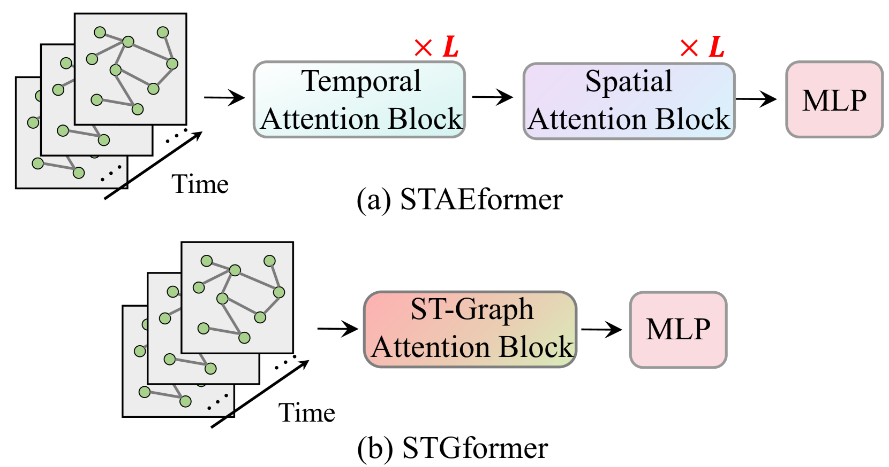
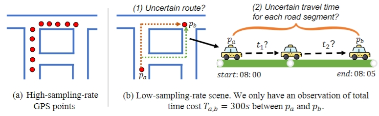

|
Hongjun Wang (王宏俊)
I'm currently a Ph.D. Candidate at
Department of Mechano-Informatics, The University of Tokyo,
supervised by Prof.
Yinqiang
Zheng. Prior to this, I attained my master's degree,
supervised by Prof. Xuan
Song from the Department of Computer Science at Southern University of
Science and Technology. I earned my B.S. degree in
Information and Computer Science from Nanjing University of Posts and Telecommunications.
Email /
Google
Scholar /
CV
|

|
Interns
2024.10 - NOW: AI for Science Research Intern, at Shanghai AI Lab, mentored by Mao Su.
2023.6 - 2023.09: CUHK, at Center for Mathematical Artificial Intelligence, mentored by Tieyong Zeng.
2022.07 - 2023.02: Data, Knowledge, and Intelligence, Microsoft Research Asia, mentored by Lun Du.
|
Publications
|

|
Assessing the Spatial-Temporal Causal Impact of COVID-19-Related Policies on Epidemic Spread
Zhang Zhiwen, Hongjun Wang, Zipei Fan, Xuan
Song, Ryosuke Shibasaki
ACM Transactions on Knowledge Discovery from Data 2024.
paper
|
|

|
Unveiling the Inflexibility of Adaptive Embedding in Traffic Forecasting
Hongjun Wang, Jiyuan Chen, Lingyu Zhang, Renhe Jiang, Xuan Song
IEEE Transactions on Knowledge and Data Engineering (TKDE) 2024. (under
review)
paper /
code
|

|
Evaluating the Generalization Ability of Spatiotemporal Model in Urban
Scenario
Hongjun Wang, Jiyuan Chen, Tong Pan, Zheng Dong, Lingyu Zhang,
Renhe Jiang, Xuan Song
IEEE Transactions on Knowledge and Data Engineering (TKDE) 2024. (under
review)
paper /
code
|
|

|
Robust Traffic Forecasting against Spatial Shift over Years
Hongjun Wang, Jiyuan Chen, Tong Pan, Zheng Dong, Lingyu Zhang,
Renhe Jiang, Xuan Song
IEEE Transactions on Knowledge and Data Engineering (TKDE) 2024. (under
review)
paper /
code
|
|

|
STGformer: Efficient Spatiotemporal Graph Transformer for Traffic Forecasting
Hongjun Wang, Jiyuan Chen, Tong Pan, Zheng Dong, Lingyu Zhang,
Renhe Jiang, Xuan Song
IEEE Transactions on Intelligent Transportation Systems (T-ITS) 2024. (under
review)
paper /
code
|

|
Navigating Beyond Dropout: An Intriguing Solution Towards Generalizable Image
Super Resolution
Hongjun Wang, Jiyuan Chen, Yinqiang Zheng, Tieyong Zeng
The IEEE / CVF Computer Vision and Pattern Recognition Conference (CVPR)
2024.
paper /
code
|

|
Assessing the Continuous Causal Responses of Typhoon-related Weather on Human
Mobility: An Empirical Study in Japan
Zhang Zhiwen, Hongjun Wang, Zipei Fan, Ryosuke Shibasaki, Xuan
Song
Proceedings of the 32nd ACM International Conference on Information and
Knowledge Management (CIKM) 2023.
paper
|

|
TrafPS: A shapley-based visual analytics approach to interpret traffic
Zezheng Feng, Yifan Jiang, Hongjun Wang, Zipei Fan, Shuang-Hua
Yang, Huamin Qu, and Xuan Song
Computational Visual Media (CVMJ) 2023.
paper
|

|
HoLens: A visual analytics design for higher-order movement modeling and visualization
Zezheng Feng, Fang Zhu, Hongjun Wang, Jianing Hao, Shuang-Hua Yang, Wei Zeng, Huamin Qu
Computational Visual Media (CVMJ) 2024.
paper
|

|
Causal-Based Supervision of Attention in Graph Neural Network: A Better and
Simpler Choice towards Powerful Attention
Hongjun Wang, Jiyuan Chen, Lun Du, Qiang Fu, Xuan Song
The 32nd International Joint Conference on Artificial Intelligence (IJCAI),
Macao, August 2023.
paper
|

|
Missing Road Condition Imputation Using a Multi view Heterogeneous Graph Network
from GPS Trajectory
Zhiwen Zhang, Hongjun Wang, Zipei Fan, Xuan Song, and Ryosuke
Shibasaki
IEEE Transactions on Intelligent Transportation Systems (T-ITS), 2023.
paper
|

|
Easy Begun is Half Done: Spatial-Temporal Graph Modeling with ST-Curriculum
Dropout
Hongjun Wang, Jiyuan Chen, Tong Pan, Zipei Fan, Boyuan Zhang,
Renhe Jiang, Xuan Song
Proceedings of the AAAI Conference on Artificial Intelligence (AAAI), 2023.
paper
|

|
Discovering Key Sub-trajectories To Explain the Traffic Prediction
Hongjun Wang, Zipei Fan, Jiyuan Chen, Lingyu Zhang, Xuan Song
Sensors, 2022.
paper
|

|
Multi‑task Weakly Supervised Learning for Origin–Destination Travel Time
Estimation
Hongjun Wang, Zhiwen Zhang, Zipei Fan, Jiyuan Chen, Xuan Song,
Ryosuke Shibasaki
IEEE Transactions on Knowledge and Data Engineering (TKDE), 2022.
paper
|

|
ST-ExpertNet: A Deep Expert Framework for Traffic Prediction
Hongjun Wang, Jiyuan Chen, Zipei Fan, Zekun Cai, Ryosuke Shibasaki, Xuan Song
IEEE Transactions on Knowledge and Data Engineering (TKDE) 2022.
paper
|
|

|
Route to Time and Time to Route: Travel Time Estimation from Sparse Trajectories
Zhiwen Zhang, Hongjun Wang, Zipei Fan, Jiyuan Chen, Xuan Song,
Ryosuke Shibasaki
European Conference on Machine Learning and Principles and Practice of Knowledge Discovery in Databases (ECML-PKDD), 2022.
paper
|

|
Multi-modal graph interaction for multi-graph convolution network in urban
spatiotemporal forecasting
Lingyu Zhang, Xu Geng, Zhiwei Qin, Hongjun Wang, Xuan Song,
Yunhai Wang
Sustainability, 2022.
paper
|
|
Awards/Scholarships
SPRING GX, The University of Tokyo, 2023.10 - Now
SUSTech Fellowship Program, 2023.10 - Now
Shibasaki Scholarship, 2024.10 - Now
Star of Tomorrow Internship program in Microsoft Research Asia
|
The template comes from the personal website of Jon
Barron.
|
|